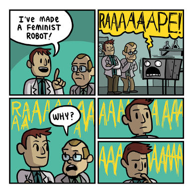
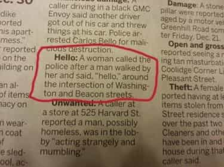
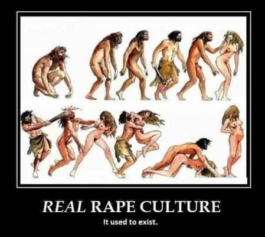
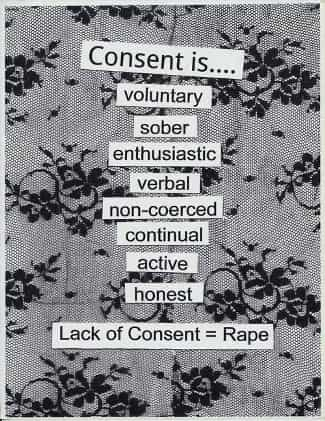

< < < Back
Help Raise Awareness About Rape Tourette’s – Return Of Kings
Every two minutes, a woman is diagnosed with Rape Tourette’s.
That’s a disturbing statistic, but it’s all the more alarming when you consider that RT is highly preventable and treatable if detected early. Any woman could fall victim, but the risk increases if someone in that woman’s social networking circle has been diagnosed with RT, or if that woman comes into close contact with demographics prone to habitually abusing the word “rape,” blurting it out constantly: as a means to lay claim to the victimization credentials of real victims, as a catch-all insult for male sexuality, or as a means to shut down a conversation—thereby rendering the term increasingly meaningless.

The Return of Kings Foundation is committed to fighting this terrible affliction and is launching a campaign to raise awareness about Rape Tourette’s. Join us in the fight against RT!
Together we can make Rape Tourette’s a thing of the past.
Know the facts.
Knowledge is power, but how much do you know about Rape Tourette’s?
Did you know?
- RT doesn’t just affect woman, 1 in 4 manginas suffer from it
- Manginas suffer a more acute strain, which attacks their white-knight cells and wimp nodes
- Most people catch RT on the Internet or from someone they know
- RT spreads rapidly through college campuses and blog comment sections
- Until 2013, Rape Tourette’s was simply known as the “Feminist Plague”
Talk to your red-pill doctor.
The early signs of RT are often subtle, but the full-blown disease matures quickly. It doesn’t take long before a victim is blurting out the word every day. Left untreated, acute RT sufferers have been known to use the word “rape” for every word in a sentence.
If you, or someone you know, exhibits one or more of these early signs, seek immediate professional help.
- Uses the word “rape” as punctuation, or to insert false gravity into a pedestrian statement
- Uses the word “rapist” as catch-all insult for anything to do with male sexuality
- Exhibits unreasonable fear or envy of men or natural male sexuality

- Talks in lispy, effeminate voice, but is ostensibly heterosexual*
- Cuts hair short, or in bizarre shaving configurations that more appropriately belong on a dune-buggy driver in a dystopian desert wasteland in the distant future
- Convinced that “rape culture” is a real thing, in the Western world especially
*applies only to manginas

- Uses exotic, incoherent gobbledygook terms like “cis-gendered” or “demi-sensual”
- Deploys the word “rape” to try to shut down a conversation or activate white knights in the immediate vicinity
- Posts about any kind of “shaming” (fat, slut, or otherwise) on his/her social network or dating profiles
- Easily offended or emotionally wounded; even becomes visibly agitated or faux-angry when they use the term themselves
- Pathological obsession over increasingly absurd, even comical, levels of “consent”

Make a difference.
Rape Tourette’s can affect your sister, your mother, or your friendzoned mangina orbiter. So, learn how to recognize the problem and speak up.
Because only we can prevent RT.
Read More: 7 Traits of the Male Feminist


{kind=link}
{kind=link}
{kind=link}
{kind=link}
{kind=link}